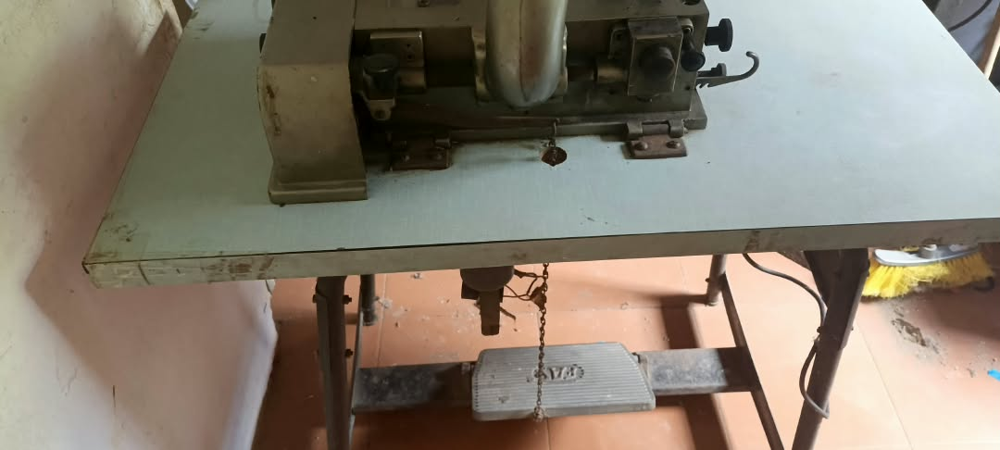
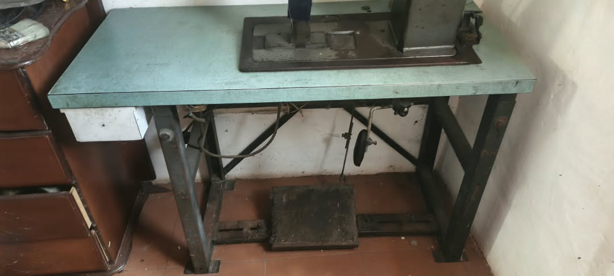
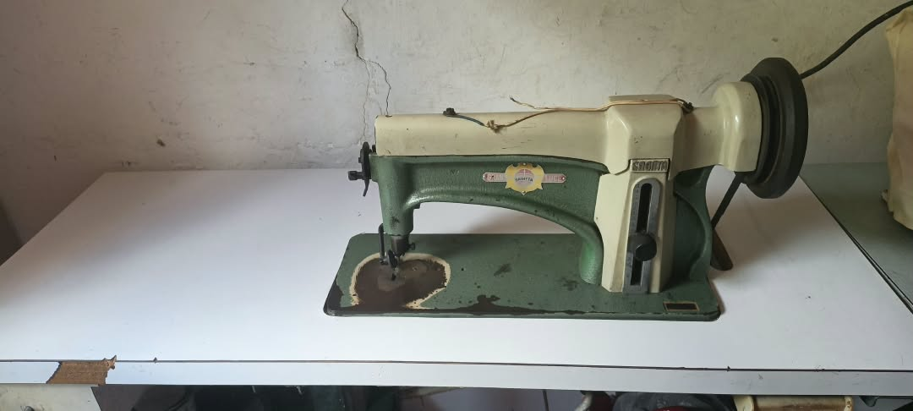
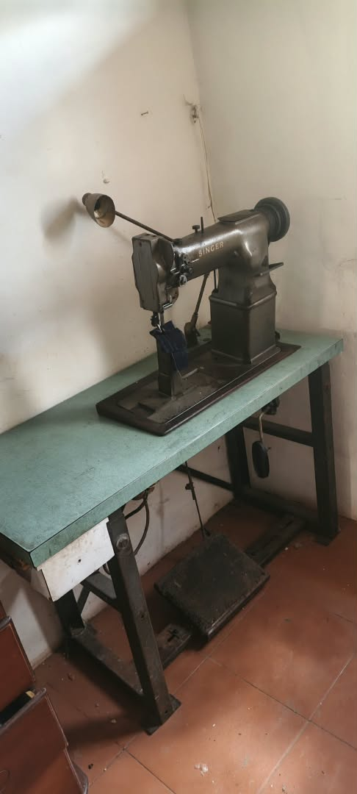
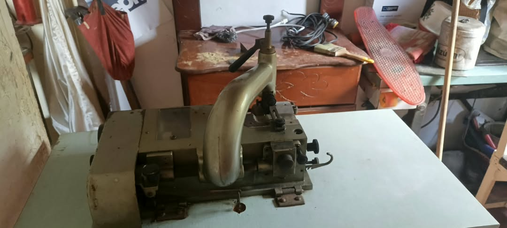
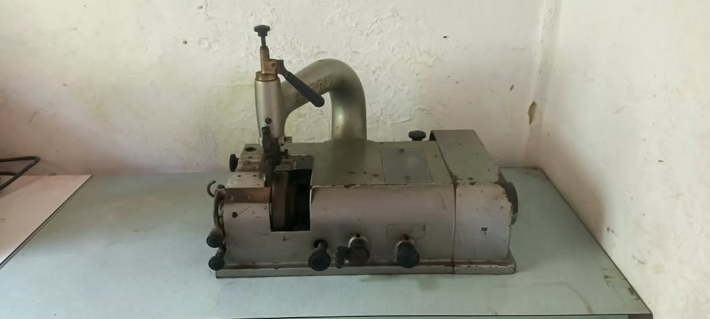
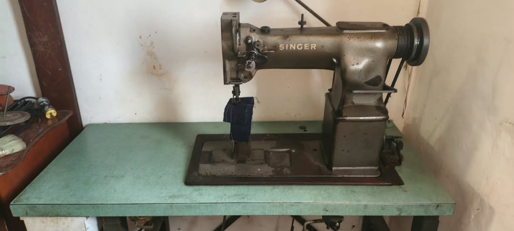
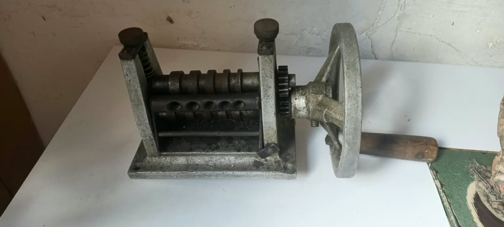
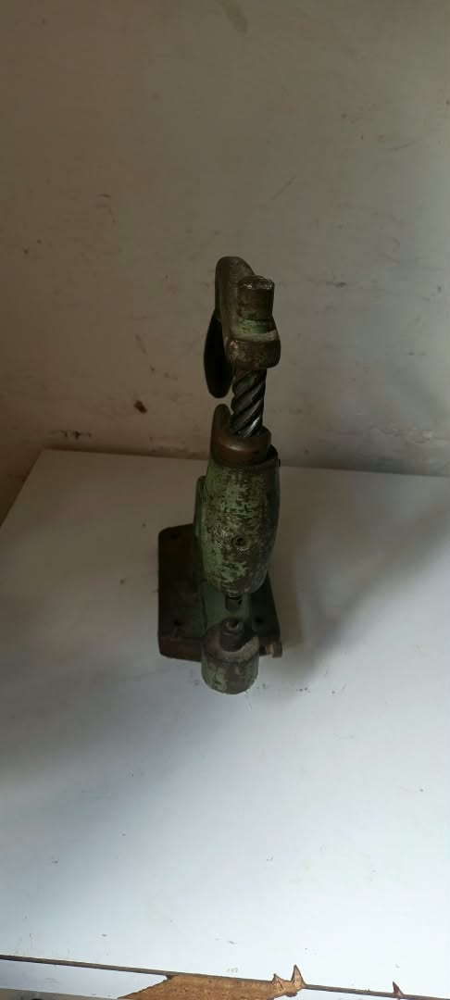
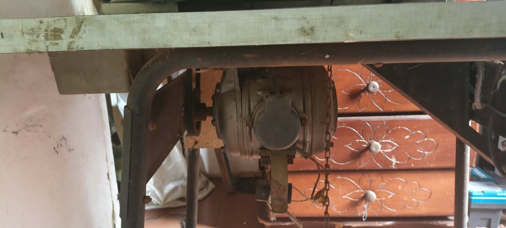

Se pone a la venta por SUBASTA el lote completo de maquinaria industrial para taller de calzado y cuero. Todas las máquinas están 100% operativas y listas para trabajar desde el primer día. ¡No se venden por separado!
Ideal para calzado, botas y bolsos con formas curvas. Costura perfecta alrededor de la horma.


Perfecta para cuero, carteras, cinturones y costuras generales.


Esencial para afinar y adelgazar bordes, logrando acabados profesionales sin bultos.


Ideal para perforar y colocar remaches, broches y ojales.


Mesas de trabajo originales, estructuras de hierro, motores, pedales y accesorios instalados.


🔥 Todo incluye: Mesas de trabajo originales, estructuras de hierro, motores, pedales y accesorios instalados.
📍 Ubicación: Caracas, Ciudad Tiuna (Entrega en sitio).
💰 Precio Inicial de Subasta: $1.000 USD (Incluye todo el lote completo).
❌ Condición: Venta exclusiva del lote completo (no se venden máquinas por separado).
Se aceptan ofertas únicamente por encima de los $1.000 USD. La mejor oferta se lleva el lote completo. ¡Aprovecha esta oportunidad única para montar tu taller!